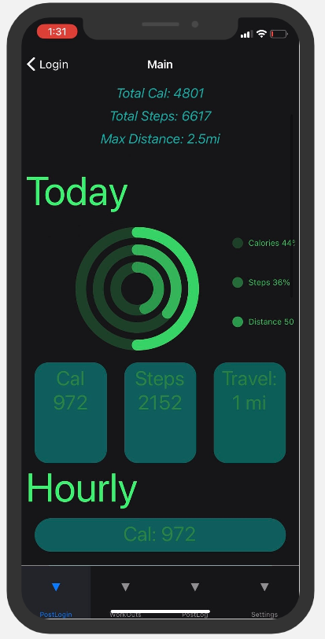
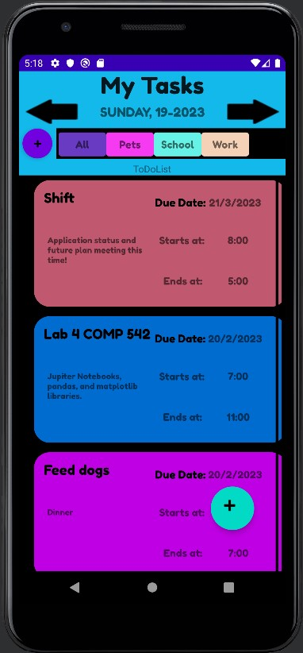

Created a native application for Android and Apple (iOS) with a team of 5. Users can track daily fitness metrics leveraging native
Health APIs. Users can create individual accounts with user credentials. Ability to display individualized health metrics
post login.

Task Management Application
As a group project created a application for managing user tasks on a mobile phone. Users had the ability to create, modify, edit,
and delete tasks. My responsibility was to write all the database code, user interface creation and several back-end components.

Mailer Website
Website where authenticated users can schedule automated emails to be sent to designated users.